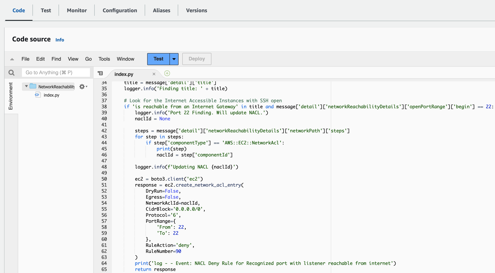

Module 4 - Integration and Remediation
In the previous module you identified issues with the network configuration. It's good to have those identified, but we should also remediate them. In this module you will leverage additional AWS services to deploy automatic remediations to known bad configurations.
Integrating Inspector with other AWS Security Services
In order to implement automatic remediation for specific findings we need a trigger for new findings coming in. We will create a rule within Amazon EventBridge which is a service that provides real-time access to changes in data in AWS services, your own applications, and software as a service (SaaS) applications without writing code. Then you are going to use that to trigger a Lambda function to remediate one of the most critical findings we found. The CloudFormation template has deployed a Lambda function to block SSH access to misconfigured instances. Let's build the connection from EventBridge to Lambda and review the code.
-
Go to the Amazon EventBridge console
-
Click on Rules on the left hand side and then on the button named Create rule
-
Name the rule InspectorAutomation. Leave everything else as default and click on Next.
-
Scroll down to Sample Event, go into the Dropdown and select Inspector2 Finding. Have a look at the sample event to understand the structure of such an event that EventBridge would send to our Lambda function when Inspector detects a new finding. We will parse this structure within our Lambda function.
-
Scroll down to the Event pattern section. Here select Inspector2 as AWS service and Inspector2 Finding as Event type.
-
Click Next, then on target drop down select Lambda function and the NetworkReachabilityDemo-remediation-nacl function.
-
Click Next until your end up in the Review and create screen. Review the rule definition and finally click on Create rule.
We've now configured EventBridge to send any findings it receives to our Lambda function. Our Lambda function is configured to only respond to specific findings in specific ways. If you're interested in reviewing the Lambda function you can go to the Lambda console. The relevant piece of code for this activity are shown below:

You can see here that the Lambda code adds a Network ACL line that blocks SSH from the internet to any instance that has SSH open to the internet.
To trigger this you need to have Inspector submit a finding to EventBridge. Rather than waiting for Inspector to finish an assessment though, you can simulate this action.
-
Go into the Lambda console and select the function NetworkReachabilityDemo-remediation-nacl. Click on the tab named Test. Select Create new event. This allows us to define an event that we want to test our Lambda function against. We will leverage our knowledge about the structure of a finding that Inspector sends via EventBridge.
-
Let us remediate the SSH finding (including future SSH findings) as this is a critical one. Provide an Event name and copy the following JSON into the Event JSON textbox.
{
"version": "0",
"id": "c02b4335-53a3-ecf7-b4c8-0a9ffc19a8ec",
"detail-type": "Inspector2 Finding",
"source": "aws.inspector2",
"account": "708704313893",
"time": "2023-03-20T18:08:05Z",
"region": "eu-west-1",
"resources": [
"i-0cc555cfcdf60a48f"
],
"detail": {
"awsAccountId": "708704313893",
"description": "On the instance i-0cc555cfcdf60a48f, the port range 22-22 is reachable from the InternetGateway igw-0164390e83f9a0f6b from an attached ENI eni-07db2a50cfa018a03.",
"findingArn": "arn:aws:inspector2:eu-west-1:708704313893:finding/9abc5f3a76093eeb2ad420fdf9c011ab",
"firstObservedAt": "Mar 20, 2023, 6:08:05 PM",
"lastObservedAt": "Mar 20, 2023, 6:08:05 PM",
"networkReachabilityDetails": {
"networkPath": {
"steps": [
{
"componentId": "igw-0164390e83f9a0f6b",
"componentType": "AWS::EC2::InternetGateway"
},
{
"componentId": "INSERT YOUR ACL ID HERE",
"componentType": "AWS::EC2::NetworkAcl"
},
{
"componentId": "sg-0f615897558ace817",
"componentType": "AWS::EC2::SecurityGroup"
},
{
"componentId": "eni-07db2a50cfa018a03",
"componentType": "AWS::EC2::NetworkInterface"
},
{
"componentId": "i-0cc555cfcdf60a48f",
"componentType": "AWS::EC2::Instance"
}
]
},
"openPortRange": {
"begin": 22,
"end": 22
},
"protocol": "TCP"
},
"remediation": {
"recommendation": {
"text": "You can restrict access to your instance by modifying the Security Groups or ACLs in the network path."
}
},
"resources": [
{
"details": {
"awsEc2Instance": {
"iamInstanceProfileArn": "arn:aws:iam::708704313893:instance-profile/SharedServerConnectivityProfile",
"imageId": "ami-05247819264504af0",
"ipV4Addresses": [
"34.245.90.167",
"10.0.2.148"
],
"ipV6Addresses": [],
"keyName": "grey",
"launchedAt": "Mar 20, 2023, 3:25:03 PM",
"platform": "AMAZON_LINUX_2",
"subnetId": "subnet-07d7d49356afcf27b",
"type": "t2.micro",
"vpcId": "vpc-07462a62acd48e298"
}
},
"id": "i-0cc555cfcdf60a48f",
"partition": "aws",
"region": "eu-west-1",
"tags": {
"NetworkReachabilityDemo": "True",
"aws:cloudformation:stack-name": "network-reachability-workshop",
"aws:cloudformation:stack-id": "arn:aws:cloudformation:eu-west-1:708704313893:stack/network-reachability-workshop/fe6c0e20-c732-11ed-8a8d-064a414836bb",
"aws:cloudformation:logical-id": "DbServerAZ1",
"Name": "Database Server for AZ1"
},
"type": "AWS_EC2_INSTANCE"
}
],
"severity": "MEDIUM",
"status": "ACTIVE",
"title": "Port 22 is reachable from an Internet Gateway - TCP",
"type": "NETWORK_REACHABILITY",
"updatedAt": "Mar 20, 2023, 6:08:05 PM"
}
}
-
The code snippet above contains a section with INSERT YOUR ACL ID HERE in line 26. You need to replace this placeholder with the ID of the Network Access Control List that the SSH finding correlates to.
-
Go back into Inspector into the Findings view. Select the finding with port 22. Then on the detail view go into section Open Network Paths, click on Network Acl and copy the ACL id.
-
Paste the id into the appropriate place in the test event in the Lambda console: replace the "INSERT YOUR ACL ID HERE" with your ACL id
-
Click on Save. We are now ready to test the automatic remediation of port 22 internet exposed findings!
-
Go to VPC Network ACLs and click on the ACL which ID you just inserted into the test event. Click on inbound rules to the current rules.
-
Go back to the Lambda console and click the button Test. You should now see a green box with Execution result: succeeded. If you're curious you can expand details to read the log output.
Optional
If you have the time, you can use Reachability Analyzer to analyze connectivity from the Internet Gateway to the instance on port 22.
To confirm that it worked you will check the Network ACL's.
-
Copy the acl id from the Log output (or from the test event that you configured). Click on Services on the top right and click on VPC, then Network ACLs.
-
Filter the network ACLs by the id you just copied. Then click on Inbound rules.
Do you see a rule blocking SSH? This was just created by our Lambda function.
But if SSH is completely blocked to the instance, how can legitimate administrators configure the machine? Well, they can modify the Security Group and then the NACL through their Change Process. But if they want to make sure the instance wasn't compromised there's another option.
-
Click on Services on the top right and click on Systems Manager, then on Sessions Manager
-
Do you remember the instance ID with the misconfigured Security Group? If not, don't worry, it was the PoC Web Server for AZ2
-
Click on the radio button next to the instance
-
Click Start Session
-
Type "ping 8.8.8.8" - Are you able to ping out to the world? Hit Cntl-C when you're ready to move on.
-
Type "whoami" - What user are you logged into the box as?

This looks just like an SSH session! Instead though, this is a proxy created by the AWS System Manager Agent installed on the AMI. With the AWS Systems Manager Session Manager feature you can create an SSH-like access to devices that don't have port 22 open at all. All that's necessary is to allow traffic to the Systems Manager Endpoint over port 443 and return traffic.
-
When you're done, hit "Terminate" in the top right corner
-
Confirm you want to terminate the session.
Challenge
If you have the time and want to have another challenge, try to fix the findings for port 3306 open to the internet. This time fix them manually. You can start with the finding in Inspector, then utilize Reachability Analyzer to find out where traffic is allowed and fix these issues. Finally rerun the reachability analysis to check, if connection from the Internet Gateway to port 3306 on the instances is still allowed.
If you made the above work and still have time, try to remediate:
- make all WebServers listen on the same port
- Enable Bastion hosts to connect to the PoC WebServers via port 22
So now we've learned how you can use Inspector to kick off a Lambda function and automatically remediate potentially risks configurations. Additionally, you've seen how when you isolate instances from the world, you can still use AWS services to securely access them and perform troubleshooting or incidence response.
Attention
Now since there are some instances still open to the internet and potentially vulnerable, let's clean up what's been built.